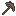

01 — FORGE
锻造紫金神装
寻找紫金矿石，打造全套防具与强力近战武器。穿齐神装，便能抵御暗物质的侵蚀。
过往浮现为熟悉的生存世界添上一条逐步展开的力量曲线：先发现新资源，再踏进危险之地，最后让物理法则也成为你的工具。
寻找紫金矿石，打造全套防具与强力近战武器。穿齐神装，便能抵御暗物质的侵蚀。
把虚空共振泵架设在末地虚空上方，让末影资源在共振中化为稀有粒子。
以对撞机制造奇点与黑洞，或展开专属领域，把对手一同拉入决斗空间。
有的改变战斗，有的改变探索方式。它们不仅是终点奖励，也是新的玩法入口。
把储物空间带在身上。物品分类收纳，并内嵌合成台、熔炉与铁砧，让旅途中的整理与制作都变得轻松。

搭建微型强子对撞机，让稀有材料在碰撞中诞生奇点。向前一步，便是能牵引实体与掉落物的原始黑洞。
探索、收集、制造、挑战。每个阶段都将打开新的目标，让世界在熟悉与陌生之间不断延伸。
从矿脉与遗迹开启全新的装备线。
架起虚空共振泵，收集关键材料。
用对撞机探索暗物质与反物质。
带上终局力量，迎接一场决斗。
当你能把虚空、时间与空间纳入掌心，
冒险才刚刚开始。